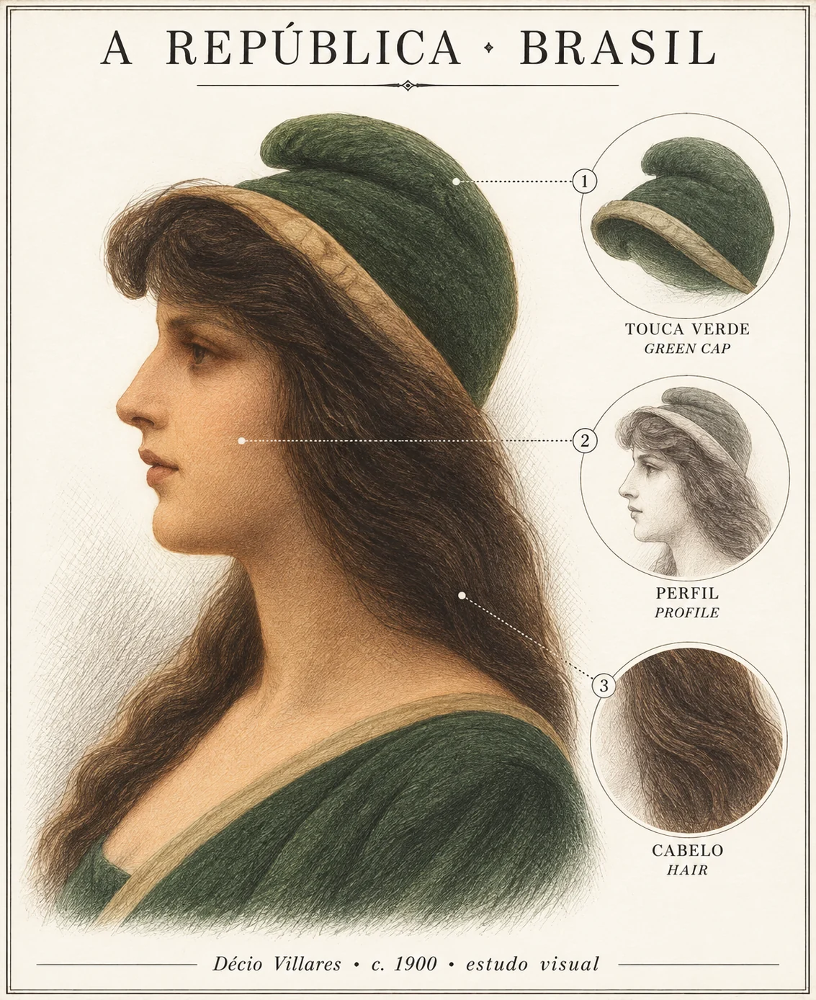

ana vanzin
ana vanzin
Objetos · arquivo visual
atlas
Moedas, gravuras e figuras de Justiça. Reúno aqui objetos da pesquisa e as fontes consultadas. As fichas indicam o que ainda está em curadoria.
- em curadoria
 Justitia vendadaXilogravura · Das Narrenschiff, Basileia · 1494A mais antiga Justitia vendada de que se tem notícia não a mostra como virtude, mas como alvo: um tolo lhe cobre os olhos, e o gesto é de zombaria. Este dossiê reúne o objeto, sua descrição material e as leituras que o atravessam.
Justitia vendadaXilogravura · Das Narrenschiff, Basileia · 1494A mais antiga Justitia vendada de que se tem notícia não a mostra como virtude, mas como alvo: um tolo lhe cobre os olhos, e o gesto é de zombaria. Este dossiê reúne o objeto, sua descrição material e as leituras que o atravessam. - em formação
 MarianneAlegoria nacional · França · séc. XVIII–A figura feminina que encarna a República francesa e viaja, transformada, para a alegoria da nação brasileira. Dossiê em formação.
MarianneAlegoria nacional · França · séc. XVIII–A figura feminina que encarna a República francesa e viaja, transformada, para a alegoria da nação brasileira. Dossiê em formação. - em formação
 BritanniaAlegoria nacional · Grã-Bretanha · séc. XVII–A alegoria britânica entre virtude cívica e poder imperial. Dossiê em formação.
BritanniaAlegoria nacional · Grã-Bretanha · séc. XVII–A alegoria britânica entre virtude cívica e poder imperial. Dossiê em formação. - em formação
 A RepúblicaAlegoria nacional · Brasil · 1889–A alegoria feminina da nação brasileira, entre importação iconográfica e invenção local. Dossiê em formação.
A RepúblicaAlegoria nacional · Brasil · 1889–A alegoria feminina da nação brasileira, entre importação iconográfica e invenção local. Dossiê em formação. - exposição · 9 objetos

A Nação como MulherExposição temática bilíngue · Europa e Américas · 1537–1917Nove personificações femininas lidas em três camadas: descrição visível, contexto histórico-jurídico e hipótese interpretativa. Com proveniência, direitos e leitura comparativa.
O Atlas está em formação. Imagens e direitos são verificados objeto a objeto antes da publicação.